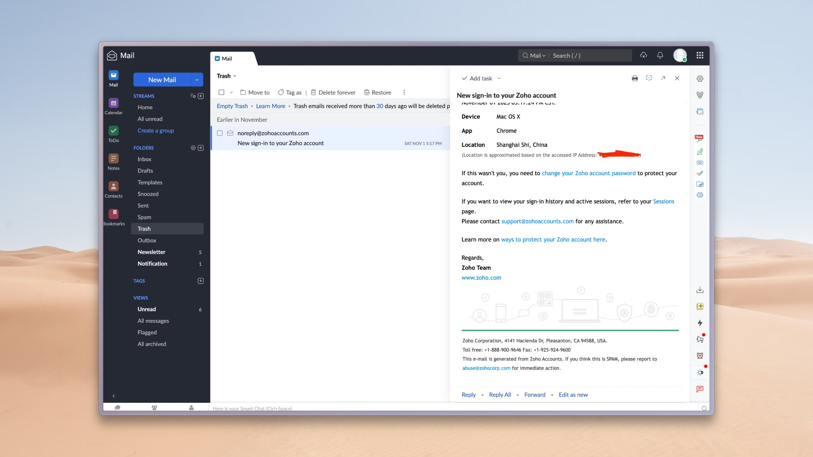

たたなこ🏳️⚧️🍥
@tatanakots
@vikingmute ttnk觉得买个rn的vps搭个mailu也挺不错的

Viking
@vikingmute
用了这么久觉得，Zoho Mail 对于独立开发来说是最香的免费企业邮箱了，界面好看，功能强大，穷鬼套餐必选，免费版足够用了。
https://t.co/uB3wqKOsxb
如果你有好几个不同的项目，来回切换麻烦，不想买workspace，可以下载一个 Zoho email 的客户端，可以添加多个帐户，就可以来回切换了。
比折腾用 https://t.co/AXDQpexoBx